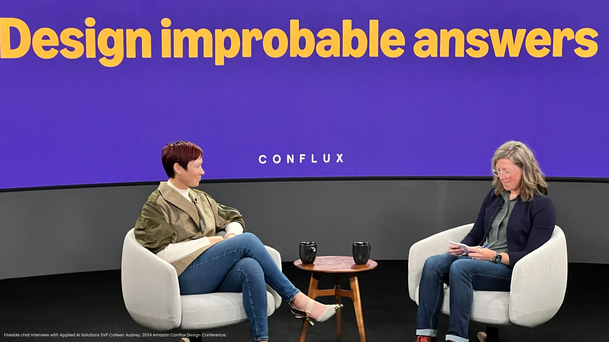

Summary
Although the product launches I helped deliver at AWS are unavaible to share publicly, I am excited to share aspects of my contributions as a UX Manager. As UX Manager for AWS Applied AI Solutions, I led design teams across AWS's most complex enterprise products, managing the UX design function for Amazon Connect and diverse industry solutions spanning Supply Chain, Automotive, Healthcare, Manufacturing, and Clean Energy. Over four years, I built high-performing design teams from the ground up, established scalable design governance mechanisms, and delivered exceptional customer experiences across technically sophisticated products serving enterprise customers.

Role
Strategic Leadership & Vision
Design Operations
Team Development & Hiring
Cross-Functional Partnership
Executive Communication
When I joined AWS Applied AI Solutions, the organization faced several challenges: inconsistent design oversight across products, limited visibility of UX work to senior leadership, and nascent design practices that hadn't yet scaled with the organization's growth. I operated with significant autonomy across multiple organizations, influencing product strategy at the SVP level while maintaining hands-on involvement when teams needed support.
My work centered on three critical areas: leading through ambiguity on high-stakes initiatives, building force-multiplying mechanisms that elevated design maturity, and developing design talent to consistently raise the bar. Over my four-year tenure, I managed 16 designers and led design of products including Amazon Connect, Amazon Supply Chain, and zero-to-one AWS Industry Products for Automotive, Healthcare, Manufacturing, Clean Energy, and Operations segments.
Strategic Vision Through Ambiguity
I partnered closely with Automotive leadership to create the strategic vision for the AWS Industry Products Auto product portfolio, designing and directing concept visuals for two narrative documents presented to the SVP. This cross-product vision synthesized customer needs across multiple technically-complex products, establishing a unified design direction.
The work required understanding how disparate automotive services could work together as a cohesive platform, identifying shared customer jobs-to-be-done, and articulating a compelling vision that resonated with executive leadership. This demonstrates organization-level strategic thinking and the ability to connect product strategy with visual storytelling.
Building Scalable Mechanisms
In November 2025, I designed a comprehensive UX intake and metrics framework mechanism for Amazon Connect that will roll out organization-wide in 2026. This system addresses how a small design team operating within massively large product delivery team can manage design requests, measure design velocity and impact, and maintain quality standards at scale.
The framework represents complex organizational thinking — it's not just a process but a strategic approach to demonstrating design's value and ensuring resources are allocated to the highest-impact work. This mechanism will influence how AWS Applied AI Solutions broadly approaches UX work management and quality delivery.
When I first joined AWS, I identified a critical gap in our org – we lacked consistent design oversight from senior leadership, leading to quality inconsistencies and missed opportunities for strategic alignment. I created, piloted, and drove adoption of a design review mechanism that provided segment-level leadership visibility into UX work.
The mechanism established a repeatable process where designers present work to senior cross-functional leaders, receive feedback, and gain recognition for their contributions.
Hiring and Developing the Best
At AWS, I managed 16 designers, hired 6, completing 67+ interviews and earned a nomination for Bar Raiser interviewer status from my recruiting partner.
Beyond hiring, I focused on developing existing talent. I coached designers toward promotion, provided targeted feedback that balanced strengths with growth areas, and created an environment where team members felt safe to experiment and fail. One direct report described me as "definitely the best manager I have experienced in my career," citing my ability to listen empathetically while maintaining high standards. I also managed performance across the spectrum — when designers struggled with execution quality, I gathered data points, provided clear feedback on impact, and coached them on performance standards with empathy and directness.